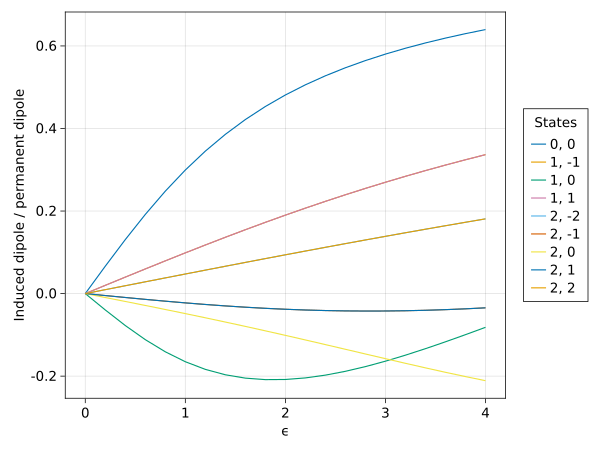
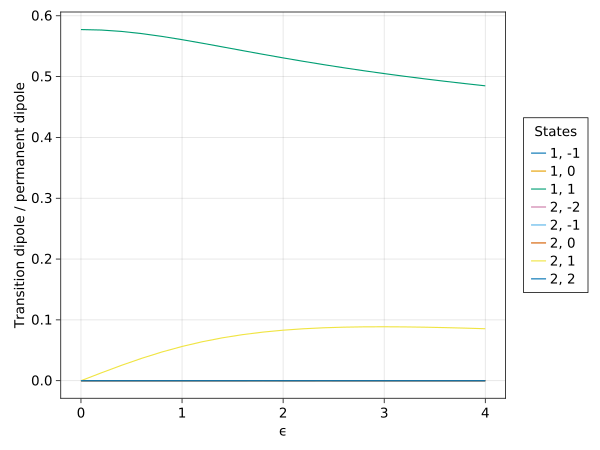

Example: dipole moments vs E
This is a more complete worked example using BialkaliSpectrum.
Let's compute various dipole moments as a function of electric field!
For simplicity, we'll do the calculation without including hyperfine structure. BialkaliSpectrum has a module BialkaliSpectrum.Toy that defines molecular parameters for an idealized molecule without hyperfine structure.
Setup
We'll start by setting up a scan of the electric field:
julia> parts = make_toy_hamiltonian_parts(8);julia> fields = generate_fields_scan(0.0, 0.0:0.2:4.0, [[]]);julia> spectra = get_spectra(parts, fields, df -> filter_rotational(df, [0, 1, 2]))Progress: 10%|███▉ | ETA: 0:00:01 Progress: 100%|█████████████████████████████████████████| Time: 0:00:00 189×13 DataFrame Row │ fields index energy eigenstate ⋯ │ External… Int64 Complex… SubArray… ⋯ ─────┼────────────────────────────────────────────────────────────────────────── 1 │ ExternalFields(SphericalVector(0… 1 0.0+0.0im ComplexF64 ⋯ 2 │ ExternalFields(SphericalVector(0… 2 2.0+0.0im ComplexF64 3 │ ExternalFields(SphericalVector(0… 3 2.0+0.0im ComplexF64 4 │ ExternalFields(SphericalVector(0… 4 2.0+0.0im ComplexF64 5 │ ExternalFields(SphericalVector(0… 5 6.0+0.0im ComplexF64 ⋯ 6 │ ExternalFields(SphericalVector(0… 6 6.0+0.0im ComplexF64 7 │ ExternalFields(SphericalVector(0… 7 6.0+0.0im ComplexF64 8 │ ExternalFields(SphericalVector(0… 8 6.0+0.0im ComplexF64 ⋮ │ ⋮ ⋮ ⋮ ⋱ 183 │ ExternalFields(SphericalVector(0… 3 1.26985+0.0im ComplexF64 ⋯ 184 │ ExternalFields(SphericalVector(0… 4 2.60238+0.0im ComplexF64 185 │ ExternalFields(SphericalVector(0… 5 5.62877+0.0im ComplexF64 186 │ ExternalFields(SphericalVector(0… 6 5.62877+0.0im ComplexF64 187 │ ExternalFields(SphericalVector(0… 7 6.12299+0.0im ComplexF64 ⋯ 188 │ ExternalFields(SphericalVector(0… 8 6.12299+0.0im ComplexF64 189 │ ExternalFields(SphericalVector(0… 9 6.41283+0.0im ComplexF64 10 columns and 174 rows omitted
This gives us the eigenstates and energies as a function of field.
For the toy molecule, the molecular parameters are such that the characteristic field is $E_c = B / d = 1 \text{ V/cm}$. This is a bit of a weird situation, so let's try to make this somewhat more clear by adding a new column :ϵ to the DataFrame, representing the unitless E-field parameter $\epsilon = E/E_c$:
julia> DataFrames.transform!(spectra, :E => DataFrames.ByRow(identity) => :ϵ);
We'll also want to use adiabatic here. This method adds a new column, :adiabatic_index. To obtain the values of these columns, the function first groups the DataFrame by :fields and indexes the state in the first group in order of increasing energy; the value of :adiabatic_index is assigned to these index. The function next steps through the remaining groups, at each point giving each eigenstate's :adiabatic_index to match the value of the eigenstate in the previous group with which it has the best overlap.
In other words, adiabatic connects states for us across different fields based on the criterion of wavefunction adiabaticity as the field is changed. This lets us track states through avoided crossings, and distinguishes between real crossings and avoided ones.
julia> spectra = adiabatic(spectra);
Plotting the induced dipoles
Having done this, let's now use induced_dipole_moments to compute the dipole moments, which are added in a column called :d_ind:
julia> dips = induced_dipole_moments(spectra, parts);julia> dips.d_ind189-element Vector{Float64}: 0.0 0.0 0.0 0.0 0.0 0.0 0.0 0.0 0.0 0.06634336919484445 ⋮ 0.6396895268698228 0.3366301572865634 0.336630157286555 -0.08170649109318481 0.1810544753538695 0.1810544753538617 -0.03449692098212524 -0.034496920982123314 -0.21103745456292206
We can now easily plot the dipole moments with plot_induced_dipole:
julia> plot_induced_dipole(dips; groupby=:ϵ);

A bit of explanation:
- The
groupbykeyword argument sets the x-axis of the plot, and defaults to:E. In this case, we override the default since we want to plot against:ϵinstead. - The
use_adiabatickwarg sets how states are connected in the line plot across different fields. The default isuse_adiabatic=true, which uses:adiabatic_indexto connect the states. Ifuse_adiabatic=false, then:index(counts energies at a given field from lowest to highest) is used instead.
Plotting transition dipoles
Let's next plot the dipole matrix elements between different states. To do this, we'll call transitions:
julia> ts = transitions(spectra, parts, State(0, 0); restrict_N=false, cutoff=nothing);
The third argument, State(0, 0), sets the "ground state" for this calculation. The dipole moments between this state and each other state are computed and stored in the columns :d_0, :d_plus, and :d_minus.
Note that we also override some of the default keyword args. The defaults have a nice behavior for some other calculations, but aren't the best here. See the docs for transitions for more info.
We can plot these up. Here are the $d^0$ matrix elements:
julia> plot_transition_dipole(ts, State(0, 0), 0; groupby=:ϵ);

The third argument sets which spherical tensor component of the dipole operator is plotted. We can plot the $d^{+1}$ matrix elements instead:
julia> plot_transition_dipole(ts, State(0, 0), 1; groupby=:ϵ);

Dumping the outputs to a file
For later use, we often want to output the results to a file. In this example, we'll put induced dipole moments of $|0,0\rangle$ and $|1,0\rangle$ and the transition dipole moment between them into a CSV file.
We've already calculated all the necessary dipole moments, but the DataFrame also has a bunch of extra information. We can remind ourselves by running the following command:
julia> names(ts)21-element Vector{String}: "fields" "index" "energy" "eigenstate" "basis_index" "N" "m_n" "I_1" "m_i1" "I_2" ⋮ "E" "ϵ" "adiabatic_index" "ground_state" "transition_frequency" "d_minus" "d_0" "d_plus" "transition_strength"
Let's select what we want into a new DataFrame:
julia> n_0_and_1 = filter_rotational(dips, [0, 1], 0);julia> d_inds = DataFrames.select(n_0_and_1, [:ϵ, :N, :m_n, :d_ind])42×4 DataFrame Row │ ϵ N m_n d_ind │ Float64 Int64 Int64 Float64 ─────┼─────────────────────────────────── 1 │ 0.0 0 0 0.0 2 │ 0.0 1 0 0.0 3 │ 0.2 0 0 0.0663434 4 │ 0.2 1 0 -0.0396689 5 │ 0.4 0 0 0.130808 6 │ 0.4 1 0 -0.0774126 7 │ 0.6 0 0 0.191796 8 │ 0.6 1 0 -0.111589 ⋮ │ ⋮ ⋮ ⋮ ⋮ 36 │ 3.4 1 0 -0.13345 37 │ 3.6 0 0 0.619027 38 │ 3.6 1 0 -0.116809 39 │ 3.8 0 0 0.629787 40 │ 3.8 1 0 -0.0994934 41 │ 4.0 0 0 0.63969 42 │ 4.0 1 0 -0.0817065 27 rows omitted
The data is currently in "long format", with separate rows for $|0,0\rangle$ and $|1,0\rangle$ at each field. For this example, let's put it in "wide format" instead, so we have a single row at each field with the induced dipoles (:d00 and :d11) as the columns. For this, we can use the wide_format function:
julia> formatted = wide_format(d_inds, :d_ind, row -> "d$(row.N)$(row.N)"; groupby=:ϵ)21×3 DataFrame Row │ d00 d11 ϵ │ Float64 Float64 Float64 ─────┼──────────────────────────────── 1 │ 0.0 0.0 0.0 2 │ 0.0663434 -0.0396689 0.2 3 │ 0.130808 -0.0774126 0.4 4 │ 0.191796 -0.111589 0.6 5 │ 0.248178 -0.141027 0.8 6 │ 0.299349 -0.165085 1.0 7 │ 0.345162 -0.183587 1.2 8 │ 0.38581 -0.196703 1.4 ⋮ │ ⋮ ⋮ ⋮ 15 │ 0.56458 -0.17691 2.8 16 │ 0.580253 -0.16377 3.0 17 │ 0.594419 -0.149189 3.2 18 │ 0.607286 -0.13345 3.4 19 │ 0.619027 -0.116809 3.6 20 │ 0.629787 -0.0994934 3.8 21 │ 0.63969 -0.0817065 4.0 6 rows omitted
To get the transition dipole, we can filter our original DataFrame and join it with formatted:
julia> d_transition = DataFrames.select(filter_rotational(ts, 1, 0), [:ϵ, :d_0]);julia> DataFrames.transform!(d_transition, :d_0 => DataFrames.ByRow(abs) => :d01);julia> DataFrames.select!(d_transition, [:ϵ, :d01]);julia> formatted = DataFrames.DataAPI.rightjoin(formatted, d_transition; on=:ϵ)21×4 DataFrame Row │ d00 d11 ϵ d01 │ Float64? Float64? Float64 Float64 ─────┼────────────────────────────────────────── 1 │ 0.0 0.0 0.0 0.57735 2 │ 0.0663434 -0.0396689 0.2 0.574616 3 │ 0.130808 -0.0774126 0.4 0.566687 4 │ 0.191796 -0.111589 0.6 0.554321 5 │ 0.248178 -0.141027 0.8 0.538572 6 │ 0.299349 -0.165085 1.0 0.520586 7 │ 0.345162 -0.183587 1.2 0.501419 8 │ 0.38581 -0.196703 1.4 0.481944 ⋮ │ ⋮ ⋮ ⋮ ⋮ 15 │ 0.56458 -0.17691 2.8 0.369837 16 │ 0.580253 -0.16377 3.0 0.358354 17 │ 0.594419 -0.149189 3.2 0.347852 18 │ 0.607286 -0.13345 3.4 0.338241 19 │ 0.619027 -0.116809 3.6 0.32943 20 │ 0.629787 -0.0994934 3.8 0.321336 21 │ 0.63969 -0.0817065 4.0 0.313879 6 rows omitted
Now that we have it in the right format, we can easily save it to a CSV.
Custom plotting with CairoMakie.jl
Plan: Put a custom plot here using the contents of formatted.
Plotting shortcuts
Plan: Show examples of the other signatures of the above plotting methods (the ones that take hamiltonian_parts).